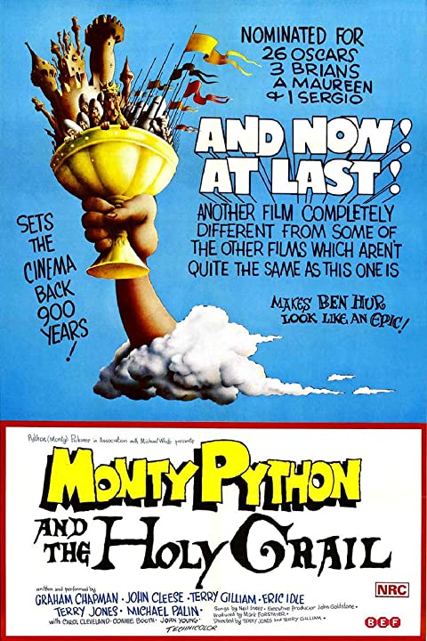
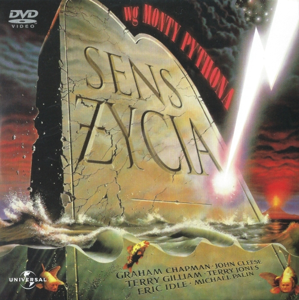

Terry Gilliam

Ukończył filologię angielską w Oksfordzie.
Od lat szkolnych marzył być aktorem i poetą, brał czynny udział w studenckich grupach teatralnych, gdzie poznał resztę z późniejszej grupy "Monty Python".
| Wiek |
77 lat w chwili śmierci |
| Data urodzenia |
1 lutego 1942 |
| Data śmierci |
21 stycznia 2020 |
| Miejsce urodzenia |
Colwyn Bay, Walia, Wielka Brytania |
| Wzrost |
173 cm |
| Filmografia |
| 1975 |
 |
Komedia |
| Monty Python I Święty Graal |
| Monthy Python And The Holy Grail |
| 1979 |
|
Komedia |
| Żywot Briana |
| Life of Brian |
| 1983 |
 |
Komedia |
| Sens Życia Według Monty Pythona |
| Monthy Python's The Meaning Of Life |
| 1989 |
|
Fantasy/Komedia/Przygodowy |
| Eryk Wiking |
| Erik The Viking |